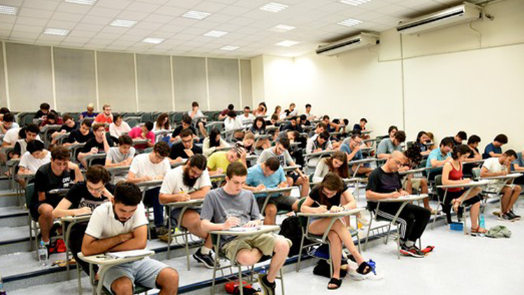

Portal de Notícias da ETECAF - 24/08/2020
Política
Economia
Internacional
Educação
Tecnologia
Cultura
Voltar
Veja também
'Precisamos deixar de ser os parasitas em relação à Amazônia', diz Fachin
Ministro do STF também afirmou em videoconferência que 'não basta dizer que outros povos não fizeram seu dever'.
Rede de hotéis Marriott reporta prejuízo acima do esperado com pandemia atingindo reservas
Crise do coronavírus prejudicou as viagens globais, levando a uma queda nas reservas de quartos.

Por adequação à nova realidade de ensino, Unicamp prevê priorizar conteúdos 'mais básicos' na 1ª fase do vestibular
Mudança visa reduzir impactos das dificuldades causadas pelo ensino remoto durante a pandemia da Covid-19. Medida não quer dizer que a prova será mais fácil, diz diretor.